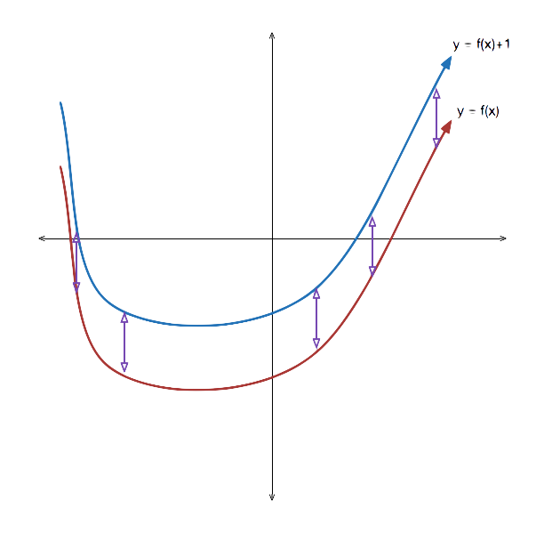
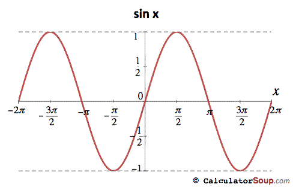
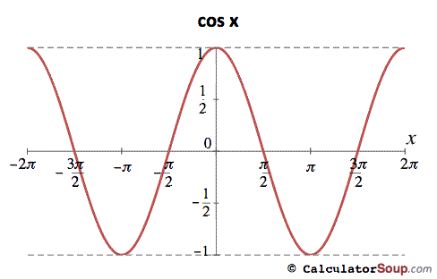
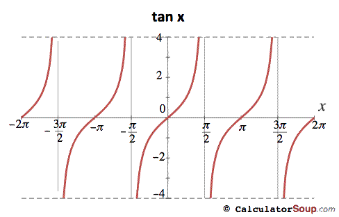
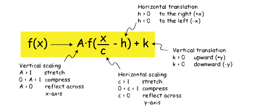

Introduction
-
What is a Transformation
A Transformation is a change made to a function from its orginal state (parent function). This includes changing a functions posistion either vertically or horizontallity, a stretch/compression or flipping it over an axis.
Transformations can be expressed graphically or algebracly through the equation of the function.
 -
How to Describe a Transformation
Translations:
• Function moves right: Horizontal translation ___ units right
• Function moves left: Horizontal translation ___ units left
• Function moves up: Vertical translation ___ units up
• Function moves down: Vertical translation ___ units down
Strech/Compression:
• Function is stretched vertically: Vertical stretch by a factor of ___
• Function is compressed vertically: Vertical compression by a factor of ___
• Function is stretched horizontally: Horizontally stretch by a factor of ___
• Function is compressed horizontally: Horizontally compression by a factor of ___
Reflections:
• Function is vertically reflected: Reflection over the x-axis
• Function is horizontally reflected: Reflection over the y-axis
How to Identify Transformations - Graph
-
Graph the Parent Function
Identify what the parent function of the transformed function is. to Identify the parent function look at what trigonometric function is in the equation. For instance if the equation is f(x)=2sin[3(x-2)]+4 the parent function is g(x)=sin.
  *Confused? see How to Graph for help.
How to Identify Transformations
-
Equation Format
y=asin[k(x-d)]+c or y=acos[k(x-d)]+c
• "a" is the vertical stretch/compression
• if a > 1 it is a vertical stretch
• if 0 < a < 1 it is a vertical compression
• if a is negative it is a reflection on the x-axis
• "k" is the horizontal stretch/compression
• if k > 1 it is a vertical compression
• if 0 < k < 1 it is a vertical stretch
• if k is negative it is a reflection on the y-axis
• "d" is the horizontal translation
• if d is positive it is a translation to the right
• if d is positive it is a translation to the left
• "c" is the vertical translation
• if c is positive it is a translation to the right
• if c is positive it is a translation to the left
